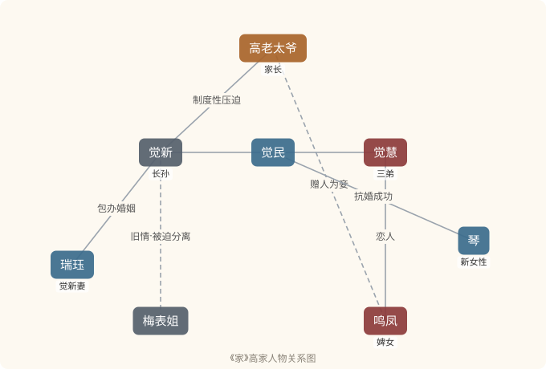

家
一、基本信息
| 作者 | 巴金 |
|---|---|
| 成书/出版 | 1931年以《激流》为题连载，1933年开明书店单行本（Britannica 系1933年） Ba Jin — Encyclopaedia Britannica（百科全书） |
| 国别/地区 | 中国 |
| 时代 | 现当代 · 现代 |
| 体裁 | 长篇小说 |
| 语言 | 汉语（白话） |

《家》高家人物关系图（人物关系图）
二、创作背景
创作直接动力是家族悲剧：1931年，巴金的大哥李尧枚在成都自杀——他正是《家》里觉新的原型。巴金在报刊连载中把'一个正在崩溃中的封建大家庭的全部悲欢离合'写进小说（创作缘起为其自述大意，转述待核）。
Britannica：《家》（Jia, 1933）为自传性三部曲《激流》（Torrent trilogy）的第一部，三部曲至《秋》（1940）完成；其早期小说'attacked the traditional family system'（攻击传统家族制度）。
时代背景：五四运动之后的青年反叛潮——娜拉出走、恋爱自由、新青年与旧家庭的文化战争正是全书的历史语境。
三、内容脉络
成都高公馆——四世同堂的官僚地主大家庭。长房三兄弟：觉新（长孙，'作揖主义'与'无抵抗主义'的实行者，被迫放弃青梅竹马的梅表姐、娶了瑞珏）、觉民（温和的反抗者，与琴的恋爱）、觉慧（最激烈的叛逆者，爱上婢女鸣凤）。
悲剧依次发生：鸣凤被高老太爷当作礼物许给冯乐山做妾，投湖自尽；梅表姐郁郁而逝；瑞珏在'血光之灾'的迷信中被迁往城外生产而死，觉新隔门听妻惨呼而不敢见最后一面。
觉慧决意出走：'我要做自己的主人'——全书以他乘船离去的'激流'意象收束。后两部《春》《秋》写觉民一代与周家、克安克定们的继续溃烂与新一代的出走。
四、主要人物表
| 人物 | 身份 | 说明 |
|---|---|---|
| 觉新 | 长房长孙 | '作揖主义'的牺牲者与执行者——中国现代文学最深刻的'中间人物' |
| 觉慧 | 三弟 | 热血叛逆的五四青年，鸣凤之恋与出走 |
| 觉民 | 二弟 | 抗婚胜利的温和改革者 |
| 鸣凤 | 婢女 | 投湖自尽——被当礼物赠送的少女之死 |
| 瑞珏 | 觉新之妻 | '血光之灾'迷信下死于城外生产 |
| 高老太爷 | 家长 | 家族权威的化身，临终才见制度之崩 |
| 梅表姐（钱梅芬） | 觉新旧爱 | 郁郁而逝的旧式才女 |
五、主题与艺术特点
- 大家庭作为制度：不是某个恶人，而是等级、迷信、姨太太制度构成的系统杀人——鸣凤、梅、瑞珏之死都是制度的死亡判决。
- 青春对坟墓的反抗：觉慧的出走是五四青年的标准动作；小说点燃了几代青年'离家'的冲动（此影响力表述为文学史通说，待核）。
- 觉新的悲剧性：'作揖主义'既非懦弱也非真诚的妥协，而是长房长孙制度的人格产品——巴金晚年自评对觉新'了解最多也最同情'（大意，待核）。
- 艺术特点：炽烈抒情的青春文体、日常场景的道德戏剧化、三部曲的编年结构。
六、影响与评论
- Britannica：《家》（1933）为激流三部曲之首（至1940年《秋》补成），巴金因此在1930—40年代赢得广泛声誉。
Ba Jin — Encyclopaedia Britannica（百科全书） - Britannica：其早期小说攻击传统家族制度——文学史普遍把《家》列为反封建的标志性文本（该定位为学界通说）。
Ba Jin — Encyclopaedia Britannica（百科全书） - 跨媒介传播：1953年与2007年电影版、1985年电视剧版等（通说，年表待核）；话剧（曹禺改编《家》1942）为另一经典版本（通说待核）。
Ba Jin — Encyclopaedia Britannica（百科全书） - Britannica：巴金的文章与左翼活动为革命凝聚了知识界支持——小说的社会动员力可见一斑。
Ba Jin — Encyclopaedia Britannica（百科全书）
七、阅读建议
难点
- 情感浓度高而叙事直白，现代读者需适应'青春文体'的呼号式表达。
- 人物众多（四代人+仆婢），可用家系图辅助。
- 与《红楼梦》对照读极有价值：同为大家庭崩解，一冷一热、一挽歌一战歌。
- 人民文学出版社《家》（激流三部曲通行本）：标准读本。
- 《巴金全集》（人民文学出版社）：研究型。
- 曹禺改编话剧《家》（1942）剧本对照：同一题材的两种艺术处理。
通读《家》→ 选读《秋》的结局章节 → 对照曹禺话剧《家》看改编如何把重心从觉慧移向觉新与瑞珏 → 有兴趣再读《寒夜》看巴金现实主义的不同面目。
八、待核实
- 连载时段（1931《时报》）与单行本出版月份（1933年5月开明书店说）待核。
- 大哥之死与小说情节的对应细节（觉新之妻之死的素材来源）待核。
- 电影电视剧改编年表（1953/1985/2007等）待核。
- Britannica 'Extinction'(Miewang, 1929) 与本条目其他书名的中译对位待核。
本页主要来源
巴金的其他收录作品：家